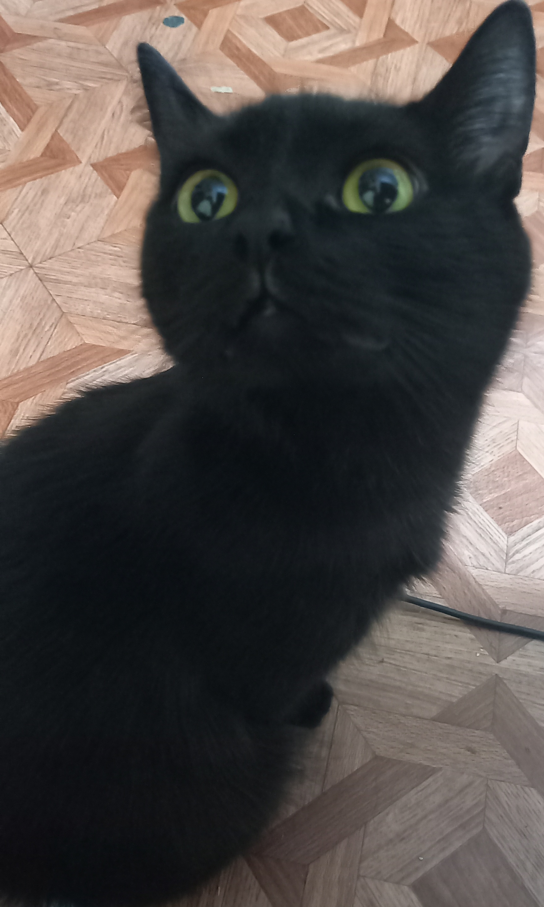
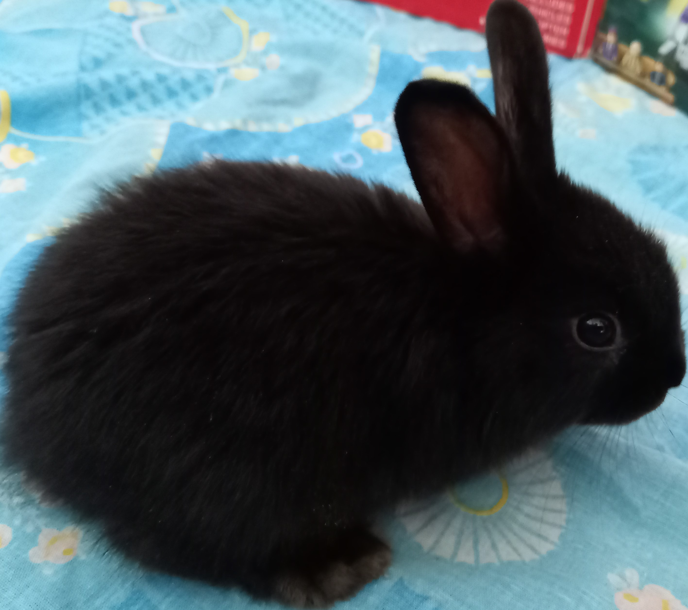

Мои домашние животные
У меня дома живут два милых чёрных создания. Хотя иногда они
бывают не очень милыми. Их зовут Тучка и Коржик, это кошка
и кролик соответственно.
Тучка

Тучка живет с нами уже очень давно. Восемь лет назад мы взяли её
совсем маленькой. Обычную еду она совсем не ест, любит только
специальные корма для кошек.
Наиболее часто покупаю корма:
- Whiskas
- Felix
- Perfect Fit
| Любимое занятие | Время суток |
|---|
| Сон | День |
| Игры | Ночь |
| Перекус | Всегда |
Коржик

Коржик у нас живёт уже три года. Каждый год мы уезжаем в гости
к бабушке и забираем его с собой. Он очень мило зевает и просит
кушать. А иногда злится. Кролик тоже любит специальный корм и сено.
Уход за кроликом:
- Раз в неделю я вычищаю клетку и меняю покрытие её дна,
наполнитель лотка - 2-3 раза в неделю
- В доступе всегда сено и свежая вода
- Периодически подстригаю когти